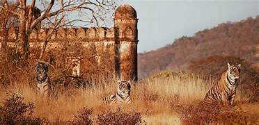
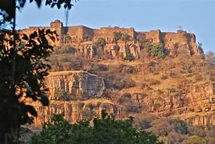
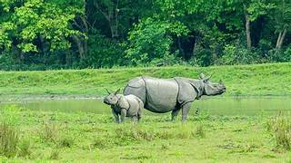
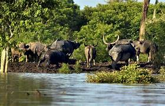
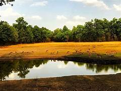
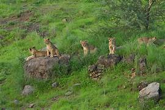
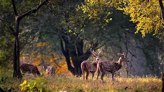
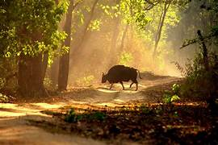
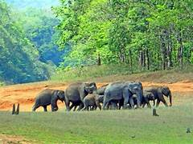
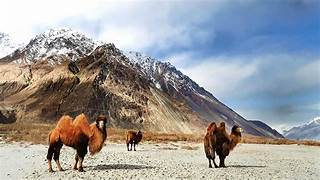

Intoduction
National parks in India are IUCN (International Union of Conservation of Nature) category II protected areas. India's first national park was established in 1936, now known as Jim Corbett National Park, in Uttarakhand. In 1970, India had only five national parks. In 1972, India enacted the Wildlife Protection Act and Project Tiger in 1973 to safeguard the habitats of conservation reliant species and currently there are 106 national parks in India. Further legislation strengthening protection for wildlife was introduced in the 1980s.
National sanctuaries,
often referred to as national wildlife sanctuaries or wildlife reserves, are protected areas dedicated to conserving and safeguarding the natural habitat and biodiversity of various plant and animal species. These sanctuaries are established by governments to provide a safe haven for indigenous wildlife, offering a refuge where these species can thrive without the threat of habitat destruction, poaching, or other human activities.
Important reasons for creating wildlife sanctuaries -
1) Biodiversity Conservation
2) Habitat protection
3) Education and Awareness
4) Climate change mitigation
5) Preservation of cultural heritage
1. Jim Corbett National Park
Jim Corbett National Park is the oldest national park in India and was established in 1936.
It is located in the Nainital district of Uttarakhand and is known for its rich biodiversity,
including Bengal tigers, leopards, and elephants.In the early 1900s, several Britishers, including E. R. Stevans and E. A. Smythies, suggested the setting up of a national park on this soil. The British administration considered the possibility of creating a game reserve there in 1907.[9] It was only in the 1930s that the process of demarcation for such an area got underway. A reserve area known as Hailey National Park covering 323.75 km2 (125.00 sq mi) was created in 1936, when Sir Malcolm Hailey was the Governor of United Provinces; and Asia's first national park came into existence. Hunting was not allowed in the reserve, only timber cutting for domestic purposes. Soon after the establishment of the reserve, rules prohibiting killing and capturing of mammals, reptiles and birds within its boundaries were passed.


2. Ranthambore National Park
Situated in Rajasthan, Ranthambore National Park is famous for its tiger population and is
one of the best places in India to spot the majestic Bengal tiger in its natural habitat.
The park also houses a variety of other wildlife species and historic ruins.Ranthambore National Park, located in Rajasthan, India, spans around 400 square kilometers. It's renowned for its tiger population, offering a chance to glimpse these majestic creatures in their natural habitat. The park is characterized by varied landscapes, including grasslands, dry deciduous forests, and rocky terrain, creating diverse ecosystems for wildlife. Besides tigers, Ranthambore is home to leopards, sloth bears, hyenas, and a plethora of bird species. The historic Ranthambore Fort, dating back to the 10th century, stands within the park, adding cultural significance to the area. Visitors can embark on safaris—both jeep and canter—to explore the park and its rich biodiversity. Ranthambore's success in tiger conservation has made it a prominent destination for wildlife enthusiasts and photographers globally. The park's tiger-centric conservation programs and successful efforts in protecting these endangered species have garnered international acclaim.


3. Kaziranga National Park
Located in the state of Assam, Kaziranga National Park is a UNESCO World Heritage Site
known for its one-horned rhinoceros population. It is also home to elephants, tigers,
and various species of birds, making it a biodiversity hotspot in India.Kaziranga National Park, situated in Assam, India, is celebrated for its population of the endangered one-horned rhinoceros, hosting two-thirds of the world's population of this species. Spanning approximately 430 square kilometers, the park is a UNESCO World Heritage Site recognized for its conservation efforts and rich biodiversity. Its diverse landscape includes grasslands, marshes, and dense forests, providing a habitat for various wildlife species. Apart from rhinos, Kaziranga is home to elephants, wild water buffaloes, tigers, and a plethora of birdlife, including the Bengal Florican and numerous migratory birds. The Brahmaputra River flows through the park, adding to its scenic beauty and ecological significance. Jeep and elephant safaris offer visitors a chance to explore the park and observe its diverse wildlife. Kaziranga's success in protecting endangered species and preserving its unique ecosystems has made it a crucial sanctuary for wildlife conservation in India


4. Sundarbans National Park
West Bengal: Known for its unique mangrove ecosystem, Sundarbans is the habitat of the Bengal tiger. It's also home to saltwater crocodiles and various bird species.The Sundarbans National Park, shared between India and Bangladesh, is a UNESCO World Heritage Site and the largest mangrove forest globally, covering around 10,000 square kilometers. Known for its unique ecosystem where land meets the sea, it's home to the Bengal tiger, with one of the largest populations of these big cats in the world. The Sundarbans' intricate network of tidal waterways, mudflats, and small islands creates a haven for various wildlife, including saltwater crocodiles, spotted deer, and diverse bird species. The park's mangrove forests act as a crucial buffer against cyclones, protecting the coastal areas. Visitors can explore the park through boat safaris, allowing glimpses of its rich biodiversity. However, navigating these waterways comes with the thrill of encountering the elusive tigers in their natural habitat. The Sundarbans' delicate ecosystem faces threats from climate change, habitat loss, and human-wildlife conflict, making conservation efforts pivotal for its survival.
5. Bandhavgarh National Park
Nestled in Madhya Pradesh, India, is renowned for its high density of tigers, making it a prime destination for tiger sightings. Spanning approximately 450 square kilometers, the park is blessed with lush greenery, rocky hills, and dense forests. The ancient Bandhavgarh Fort, perched atop a hill within the park, adds historical significance to the area. Apart from tigers, Bandhavgarh is home to a variety of wildlife, including leopards, deer, wild boars, and numerous bird species. Its diverse landscape ranges from grasslands to tropical forests, fostering a rich biodiversity. The park offers both jeep and elephant safaris, providing visitors with opportunities to explore and witness its stunning wildlife. Conservation efforts here have contributed significantly to the preservation of these majestic big cats, making it an important stronghold for tiger conservation in India.

6. Gir National Park
situated in Gujarat, India, is famed as the last abode of the Asiatic lion, playing a crucial role in the conservation of this endangered species. Spanning over 1,400 square kilometers, the park's diverse landscape includes scrubland, grasslands, and teak forests. Beyond lions, Gir hosts a variety of wildlife, such as leopards, sambar deer, chital, and diverse birdlife. The Kamleshwar Dam within the park serves as a watering hole for the wildlife, enhancing chances for sightings during safaris. Safari options include jeep and lion safaris, allowing visitors to witness these majestic creatures in their natural habitat. Conservation efforts have been instrumental in reviving the Asiatic lion population, marking Gir as a significant sanctuary for their survival. However, the park faces challenges of habitat encroachment and human-animal conflict, emphasizing the need for ongoing conservation measures.

7. Kanha National Park
located in Madhya Pradesh, India, is renowned for its dense population of Bengal tigers, as well as for inspiring Rudyard Kipling's "The Jungle Book." Spanning around 940 square kilometers, it showcases diverse landscapes, including lush forests, grassy meadows, and streams. Beyond tigers, Kanha is home to leopards, wild dogs, barasingha (swamp deer), and over 300 bird species. The park's highlight is the successful conservation of the rare barasingha species. Safaris, both by jeep and elephant-back, offer visitors the chance to explore the park's rich biodiversity and captivating scenery. The Bamni Dadar, or Sunset Point, provides stunning panoramic views of the park. Kanha's dedication to conservation and its diverse ecosystems make it a must-visit for wildlife enthusiasts and nature lovers.


8. Periyar National Park
nestled in Kerala, India, is renowned for its lush evergreen forests and the picturesque Periyar Lake at its heart. Spanning over 900 square kilometers, it's known for preserving the endangered species of the Nilgiri tahr. The park is home to a variety of wildlife, including elephants, sambar deer, leopards, and around 260 bird species. Periyar Lake offers boat safaris, allowing visitors to witness wildlife congregating at the water's edge. The park also offers trekking opportunities, providing a chance to explore its rich biodiversity and scenic vistas. The Periyar Tiger Reserve within the park is an important sanctuary for Bengal tigers. Periyar's harmonious blend of diverse ecosystems and wildlife, along with its ecotourism initiatives, makes it a significant conservation area in South India.

9. Hemis National Park
nestled in Ladakh, India, is the largest national park in the region, covering over 4,000 square kilometers. It's renowned as a habitat for the elusive snow leopard, making it a prime destination for wildlife enthusiasts. The park's high-altitude terrain comprises alpine meadows, river valleys, and barren slopes, offering a unique ecosystem. Apart from snow leopards, Hemis is home to Tibetan wolves, Eurasian brown bears, blue sheep, and various bird species. The Hemis Monastery, nestled within the park, adds cultural significance to the area. Trekking expeditions in the park provide a chance to witness its diverse wildlife and breathtaking landscapes. Conservation efforts focus on preserving the fragile ecosystem and protecting the endangered snow leopard, making Hemis an essential sanctuary for the species' survival.

10. Nagarhole National Park
located in Karnataka, India, is a sprawling reserve spanning approximately 643 square kilometers. Renowned for its rich biodiversity, it's part of the Nilgiri Biosphere Reserve and forms an essential corridor for elephant populations in the region. The park's landscape consists of dense forests, gentle hills, streams, and waterfalls, creating a diverse habitat. Nagarhole is home to tigers, leopards, wild dogs, Indian bison (gaur), and various bird species. The Kabini River, flowing through the park, adds scenic beauty and supports the wildlife. Safari options include jeep and boat safaris, offering visitors opportunities to spot the park's diverse wildlife. Conservation efforts focus on preserving the delicate ecosystems and safeguarding the park's wildlife, making it a significant sanctuary for species conservation in South India.